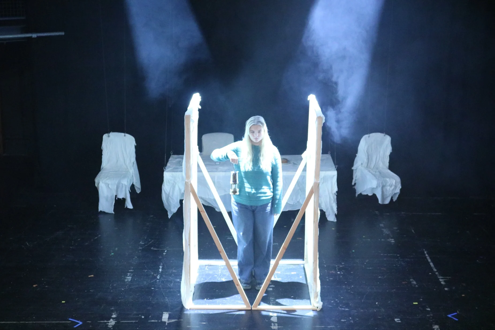
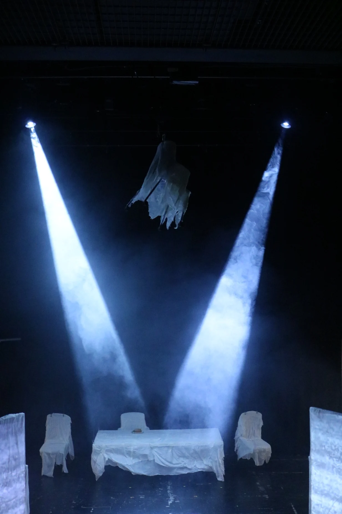
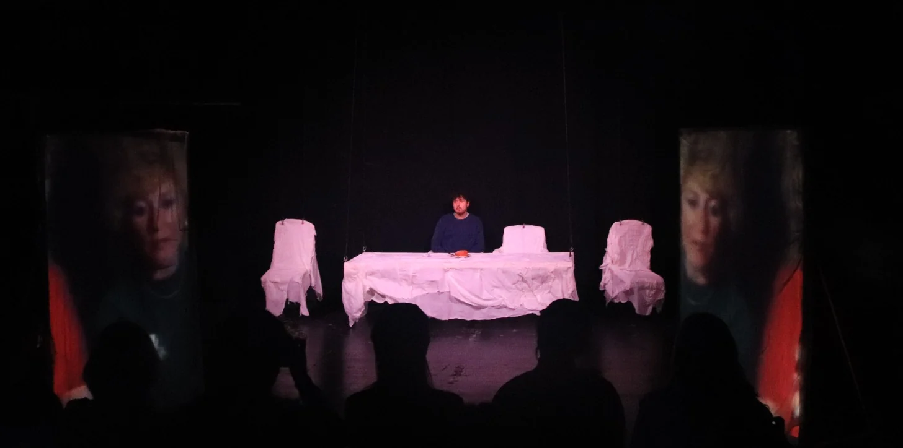
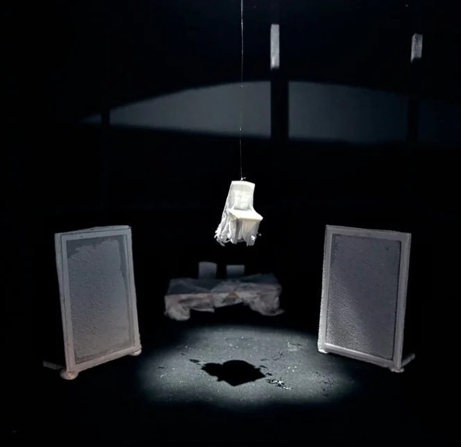
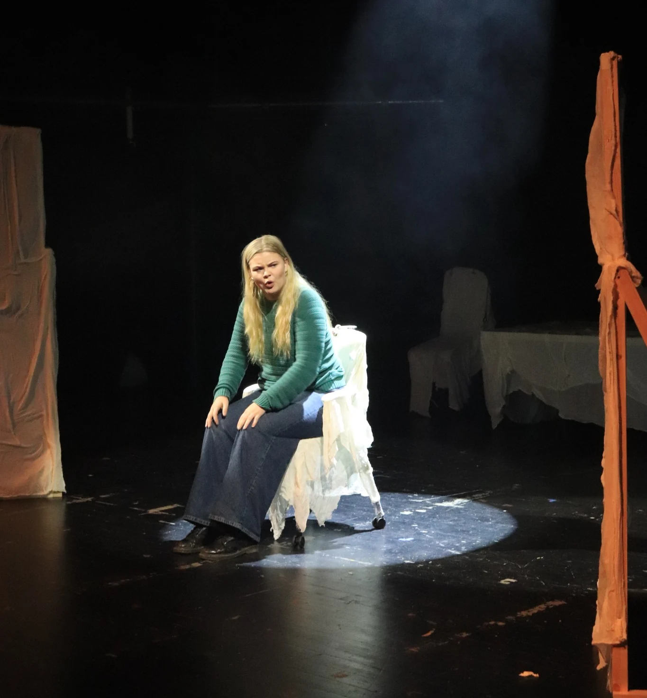

Going Deeper
Theatre Performance

Set against the miners’ strikes in 1980s England, Christina Pearson’s Going Deeper moves from the heroine’s nightmare to an argument at home. As the script developed, I shifted the focus of the design to a table and chairs, a few objects that could make the room recognisable in an instant.
Draping and suspending pieces of furniture let their outlines remain familiar as their place in the room changed. I adapted archival photographs into charcoal drawings for projection, bringing images of the strikes into the same space as the domestic scene. The set holds that public history close to the private lives it shaped.
- Role
- Theatre Design
- Medium
- Set, Projection, Live Performance
- Location
- Wimbledon College of Arts Theatre
A room under pressure
I kept the set to a table, chairs and two projection frames. The familiar shapes could carry over as the scene shifted from the nightmare to the living room.




Furniture as a shell
I tested how to fix the cloth in place without losing its folds. The suspended elements kept the outline of furniture while leaving the space below and around them open.




Credits
- Theatre design
- Yun Deng
- Playwright
- Christina Pearson
- Performers
- Christina Pearson and Danny Caner
- Photography credited in the portfolio
- Yasi Liu and Yun Deng